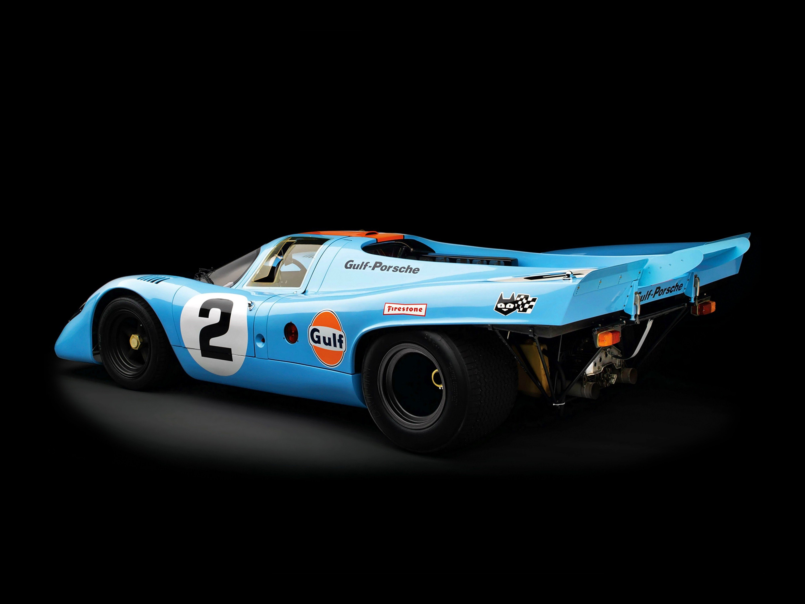

Pagina di prova HTML
Marzio Moretti, classe 4L Liceo Belfiore Mantova
Inizio sperimentazioni: 22-09-2018
Versione 0.2
Visita il mio sito: marziomoretti.it
Visualizza il changelog
Prova di inserimento immagine limitata a 500 pixel di altezza

Hotlap Lonato, categoria OK, pilota Marzio Moretti
Esempi di liste non ordinate e ordinate numericamente
Elenco puntato: menù
- caprese (posiziona il cursore sulla sritta per sapere gli ingredienti)
- tagliatelle all'anatra
- filetto alla griglia
- sorbetto
Elenco numerato: classifica
- vettel
- hamilton
- raikkonen